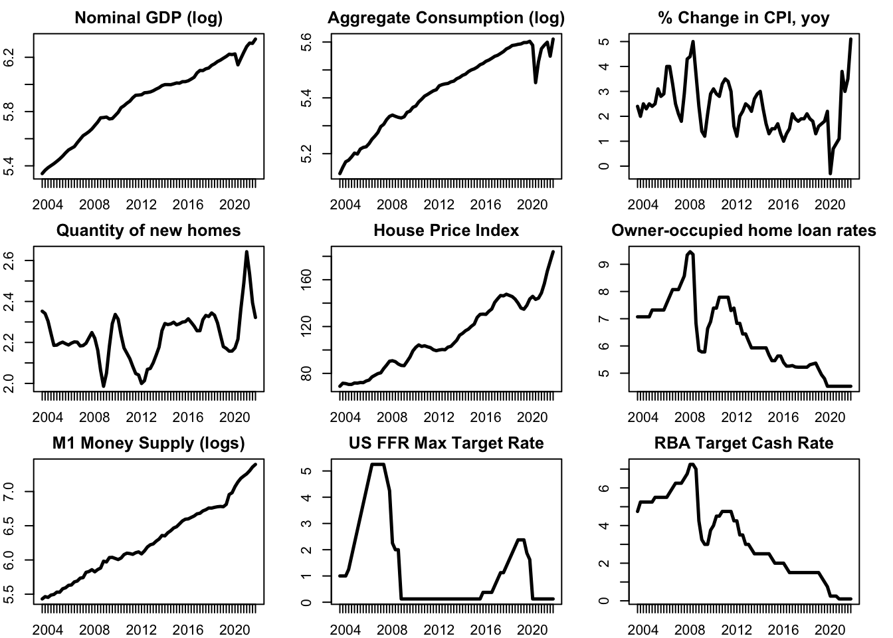

Estimating the impact of monetary policy shocks on different housing indicators: An SVAR Approach
Abstract. <under construction!>
Keywords. bsvars, impulse responses, quarto, R, housing price index, monetary policy shocks
Introduction
Monetary policy is one of the key instruments used by central banks to influence the overall economic activity. In recent years, the housing market has become an increasingly important channel through which monetary policy affects the broader economy (Aliber and Kindleberger (2017)), particularly in Australia where around 57% of household wealth is tied up in the housing market (Sweeney (2023)). That number is thrice as big as the size of the super market in Australia and as such, understanding the relationship between monetary policy shocks and the housing market is crucial for policymakers, investors, and households alike.
In this study, we aim to estimate the impact of monetary policy shocks on various housing indicators using a Structural Vector Autoregression (SVAR) modeling approach. SVAR models are a popular econometric tool for investigating the dynamic interactions between macroeconomic variables. By applying this approach, we seek to shed light on how changes in monetary policy impact different dimensions of the housing market.
Research Question
The objective of this paper is to estimate and quantify the impact of monetary policy shocks on different indicators of the housing market such as housing prices, housing transactions/sales, and the total number of housing units within an economy. Understanding these effects is crucial in understanding how money affects a key factor of the real side of the economy. An extension to this paper could be determining whether monetary policy shocks create a tradeoff between controlling housing prices and controlling economic activity.
Data and their Properties
Empirical Project Setup
This project website is being developed as a Quarto document and the empirical work in conducted using R. The necessary datasets are imported from the Reserve Bank of Australia (RBA) and the Australian Bureau of Statistics (ABS) websites using readrba and readabs respectively.
Choice of variables
I use the following variables to answer this question. I discuss the relevance of each variable.
\(\log(M1)\): represents the log of the money supply M1. Both conventional and unconventional monetary policy shocks can change the stock of money supply and its size affects real variables of the economy.
\(\Delta CPI\): represents the year-on-year change in the Consumer Price Index (CPI). It is a measure of inflation in an economy and is affected by monetary policy shocks.
\(\log(c)\): represents the log of consumption of the economy. Monetary policy shocks can alter people’s consumption-savings behavior.
\(\log(GDP)\): represents the log of the Gross Domestic Product (GDP). Including this along with the consumption helps differentiate the effect on the non-consumption aspect of the economy.
\(loanrate\): represents the weighted average interest rates on owner-occupied home loans.
\(AUCR\): represents the Australian Cash Rate Target. This is the major monetary policy instrument available to the RBA.
\(USFFR\): represents the Federal Funds Rate Maximum Target Rate. Monetary policy adopted in the US tend to ripple into other economies so this is a variable of interest. Another extension to this variable would be to include the Target rates of Australia’s largest trading partners.
\(nhouses\): represents the number of new private dwellings (houses) approved for construction in Australia. Impact on housing prices might be dampened by the supply elasticity of housing captured by this variable.
\(PPI\): represents the Property Price Index in Australia. The index is normalized with respect to the property prices in 2011-2012.
Data Properties
The variables discussed above are illustrated in the figure below. Note that the logged variables trend upwards because they are expressed in their levels, while variables expressed in percentage change terms do not exhibit this behavior.
The dataset will be used in the sample consists quarterly data from 2003 Q3 to 2021 Q4, including 74 observations, plots of truncated dataset is shown as:
var_names <- colnames(df)
date_range <- as.yearqtr(rownames(df), format = "%Y Q%q")
par(mfrow = c(3,3), mar=c(2,2,2,2))
for (j in 1:ncol(df)){
plot(x = date_range, y = df[,j],,type='l',
main = paste(var_names[j]), ylab = "", xlab = "",
lwd = 2.5,
ylim = c(min(df[,j]),max(df[,j])))
}
ADF Tests
Next, I perform and display ADF test results on the variables. I report, for each variable, the difference level at which the ADF tests rejects the null that the series is non-stationary.
perform_adf_tests <- function(df) {
# Create an empty dataframe to store the results
results <- data.frame(Variable = character(), TestType = character(),
TestStatistic = numeric(), PValue = numeric(),
stringsAsFactors = FALSE)
# Iterate over each column in the dataframe
for (col in colnames(df)) {
# Remove NA values from the column
column_data <- na.omit(df[[col]])
# Perform ADF test for levels
adf_levels <- tseries::adf.test(na.omit(column_data), k = 4)
# Check if p-value is less than or equal to 0.05
if (adf_levels$p.value <= 0.05) {
results <- bind_rows(results,
data.frame(Variable = col, TestType = "Levels",
TestStatistic = adf_levels$statistic,
PValue = adf_levels$p.value)
)
} else {
# Perform ADF test for first difference
adf_diff1 <- tseries::adf.test(na.omit(diff(column_data)), k = 4)
# Check if p-value is less than 0.05
if (adf_diff1$p.value < 0.05) {
results <- bind_rows(results,
data.frame(Variable = col, TestType = "First Difference",
TestStatistic = adf_diff1$statistic,
PValue = adf_diff1$p.value)
)
} else {
# Perform ADF test for second difference
adf_diff2 <- tseries::adf.test(na.omit(diff(column_data, differences = 2)), k = 4)
results <- bind_rows(results,
data.frame(Variable = col, TestType = "Second Difference",
TestStatistic = adf_diff2$statistic,
PValue = adf_diff2$p.value)
)
}
}
}
# Return the results dataframe
return(results)
}
adf_test_results <- perform_adf_tests(df)
rmarkdown::paged_table(adf_test_results)ACF Plots

PACF Plots

Model and Hypothesis
I employ a structural VAR model to assess the impact of monetary policy shocks on different housing indicators. The SVAR model with \(p\) lags can be written as \[ \begin{align} &B_0Y_t = B_0 + B_1 Y_{t-1} + \dots + B_p Y_{t-p} + U_t\\ &U_{t}| Y_{t-1} \dots Y_{t-p} \sim _{iid} ( 0_N, I_N) \end{align} \] where \(Y_t = [\log(M1_t), \Delta CPI_t, \log(c_t), \log(GDP_t), loanrate_t, AUCR_t, USFFR_t, nhouses_t, PPI_t]'\).
\(B_0\) is a structural matrix that captures the contemporaneous relationship between the variables in \(Y_t\). \(U_t\) represents conditionally independent structural shocks.
The structural model can be estimated utilizing the information from its corresponding RF model \[ \begin{align} &Y_t = A_0 + A_1 Y_{t-1} + \dots + A_p Y_{t-p} + E_t\\ &E_{t}| Y_{t-1} \dots Y_{t-p} \sim _{iid} ( 0_N, \Sigma) \end{align} \] where \(A_i = B_0^{-1}B_i\) and \(B_0^{-1}I_N (B_0^{-1})'\).
The identification in the SVAR model can be achieved either by using some exclusion restrictions, sign restrictions, instrumental variables, or prior distribution. The next section will talk about the exact composition of the structural matrix and the conditions for identification.
Basic Model
Identification
I plan to use exclusion-restrictions to identify the structural matrix \(B_0\). In particular, I will employ the solution concept in D. Waggoner and Zha (2003) who use a normalization rule as an optimal solution to the local identification problem. I then employ the Gibbs sampler for a SVAR model with exclusion restrictions as in D. F. Waggoner and Zha (2003).
\[ B_0 Y = B_+ X + U, \qquad \qquad U|X \sim \mathcal{MN}_{N \times T}(\textbf{0}_{N \times T}, I_T, I_N) \] where
\(B_0\) is a \(N \times N\) contemporaneous effects matrix.
\(Y = [y_1, \dots, y_T]\) is a \(N \times T\) matrix of observations.
\(B_+ = [B_d, B_1, \dots, B_p]\) is a \(N \times K\) matrix of autoregressive parameters, where \(K = Np + d\) (\(d\) is the number of deterministic terms; \(p\) is the number of lags).
\(X = [x_1, \dots, x_T]\) is a \(K \times T\) matrix of lagged observations where each \(x_t = (1, y_{t-1}, \dots, y_{t-p})'\).
\(U = [u_1, \dots, u_T]\) is a \(N \times T\) matrix of structural shocks.
For convenience of coding and inference purposes, we consider a row-wise equation form as follows: \[ B_{0[n.\cdot]} Y = B_{+n} X + U_n, \qquad \qquad U_n|X \sim \mathcal{N}(\mathbf{0}_T, I_T) \]
If \(r_n\) denotes the number of elements in the \(n^{th}\) row of \(B_0\) that stay unrestricted, then we can further decompose \(B_{0[n.\cdot]}\) into \(b_n\) and \(V_n\).
\(b_n\) is a \(1 \times r_n\) vector of unrestricted elements in the \(n^{th}\) row of \(B_0\).
\(V_n\) is a \(r_n \times N\) matrix which places elements of \(b_n\) in the appropriate positions to impose the restrictions on \(B_0\).
Then, the row-wise equation form can be written as follows: \[ b_n V_n Y = B_{+n} X + U_n, \qquad \qquad U_n|X \sim \mathcal{N}(\mathbf{0}_T, I_T) \] Following D. F. Waggoner and Zha (2003) and Arias, Rubio‐Ramírez, and Waggoner (2018), we define that \((B_+, B_0)\) follow jointly a Normal-Generalised Normal (NGN) distribution denoted as \[ p(B_+, B_0) \sim \mathcal{NGN}(B, \Omega, S, \nu)\]
if \(B_{+n}\) follows a K-variate normal distribution given \(b_n\) \[ p(B_{+n}|b_n) = \mathcal{N}_k(b_nV_nB, \Omega) \] with kernel \[ p(B_{+n}|b_n) \propto \exp \left\{ -\frac{1}{2} \left( B_{+n} - b_nV_nB \right) \Omega^{-1} \left( B_{+n} - b_nV_nB \right)' \right\} \]
for \(n = 1, \dots, N\) and \(b_1, \dots, b_N\) jointly have a distribution whose kernel is specified by \[ p(b_1, \dots, b_N) \propto | \det(B_0) |^{\nu - N} \exp \left\{ -\frac{1}{2} \sum_{n=1}^N b_n V_n S^{-1} V_n' b_n' \right\} \]
The joint-distribution of \((B_+, B_0)\) can then be written as \[ p(B_0, B_+) = \left( \prod_{n=1}^N p(B_{+n}|b_n)\right) p(b_1, \dots, b_N) \]
ltexclusion = function(usedata){
BM.V = vector("list",usedata$N)
for (n in 1:usedata$N){
BM.V[[n]] = cbind(diag(n),matrix(0,n,usedata$N-n))
}
B0.initial = matrix(0,usedata$N,usedata$N)
for (n in 1:usedata$N){
unrestricted = apply(BM.V[[n]],2,sum)==1
B0.initial[n,unrestricted] = rnorm(sum(unrestricted))
}
B0Vlist = list(B0.initial = B0.initial, V = BM.V)
}Prior distribution
Given this parameterisation, we can write down the kernel of the prior given hyperparameters \((\underline B, \underline \Omega, \underline S, \underline \nu)\) as follows: \[ | \det(B_0) |^{\underline \nu - N} \exp \left\{ -\frac{1}{2} \sum_{n=1}^N b_n V_n \underline S^{-1} V_n' b_n' \right\} \exp \left\{ -\frac{1}{2} \sum_{n=1}^N \left( B_{+n} - b_nV_n \underline B \right) \underline \Omega^{-1} \left( B_{+n} - b_nV_n \underline B \right)' \right\} \] This prior distribution has two key advantages. Firstly, it leads to a full-conditional posterior distributions that allow efficient sampling. This allows us to estimate the structural parameters of the SVAR model.
Secondly, it belongs to a class of reference prior distributions that are invariant to the pre-multiplication of the parameter matrices by a rotation matrix up to which the system is identified (see Rubio-Ramirez, Waggoner, and Zha (2010)). This allows us to conduct a proper Bayesian treatment of this model given the identification above.
Calibration of the prior
- \(\underline \nu = N\) is a commonly chosen value as it implies that the generalised-normal part is equivalent to a \(r_n\)-variate normal with the mean equal to a vector of zeros and the covariance matrix equal to \(\underline S\).
- \(\underline S = \kappa_3 I_N\) implies that the covariances across the rows of \(B_0\) is zero, and the variance of each row is homoskedastic (constant). \(\kappa_3\) can be interpreted as a contemporaneous effects shrinkage and is set to 10.
- \(\underline B = [0_{N \times 1} \; \kappa_4 I_N \; 0_{N \times (p-1)N}]\) implies an AR1 process for the structural VAR at the prior mean. In this calibration, \(\kappa_4 = 1\), the AR1 process is a random walk process.
- \(\underline \Omega = \begin{pmatrix} \kappa_2 & 0\\ 0 & \kappa_1 I_{Np} \end{pmatrix}\) is the prior covariance matrix. It is taken to be a diagonal matrix with the diagonal elements set as the Litterman prior. \(\kappa_2\) represents the constant term shrinkage and is set to 10. \(\kappa_1\) represents the autoregressive slope shrinkage and is set to 0.1.
# A function that computes and stores all the prior distribution components given a parameter list input
prior = function(parameters, usedata){
priors = list(
B = cbind(rep(0,usedata$N), parameters$kappa4*diag(usedata$N), matrix(0, usedata$N, (usedata$p-1)*usedata$N)), # random walk prior
Omega = diag(c(parameters$kappa2,parameters$kappa1*((1:usedata$p)^(-2))%x%rep(1,usedata$N))),
# Omega = diag(c(parameters$kappa2,parameters$kappa1*rep(1,usedata$N*usedata$p))),
S = parameters$kappa3*diag(usedata$N),
nu = usedata$N
)
}# set the priors
parameters = list(
kappa1 = .1, # autoregressive slope shrinkage
kappa2 = 10, # constant term shrinkage
kappa3 = 10, # contemporaneous effects shrinkage
kappa4 = 1, # VAR prior persistence
S = 5000,
S.burnin = 100
)We also calibrate the number of draws \(S = 5000\) for any sampling, while the \(S.burnin = 100\) represents the number of draws that are sampled first and then discarded.
Likelihood Function
The conditional normality of the error term allows us to write the kernel of the likelihood function and show that it can be expressed as a NGN distribution. \[ \begin{align*} &L(B_+, B_0|Y,X) \propto | \det(B_0^{-1}B_0^{-1'})|^{-\frac{T}{2}} \exp \left\{ -\frac{1}{2} \sum_{n=1}^N \left(b_n V_n Y - B_{+n} X \right) \left( b_n V_n Y - B_{+n} X \right)' \right\}\\ & = | \det(B_0)|^{T} \exp \left\{ -\frac{1}{2} \sum_{n=1}^N \left( b_n V_n Y Y' V_n' b_n' - 2 b_n V_n Y X' B_{+n}' + B_{+n} X X' B_{+n}' \right) \right\}\\ & = | \det(B_0)|^{T} \exp \left\{ -\frac{1}{2} \sum_{n=1}^N \left( b_n V_n Y Y' V_n' b_n' + B_{+n} X X' B_{+n}' - 2 b_n V_n Y X' (XX')^{-1} (XX') B_{+n}' \right. \right. \\ & \left. \left. + b_n V_n Y X' (XX')^{-1} (XX') (XX')^{-1} XY'V_n'b_n' - b_n V_n Y X' (XX')^{-1} (XX') (XX')^{-1} XY'V_n'b_n' \right) \right\}\\ & = | \det(B_0)|^{T} \exp \left\{ -\frac{1}{2} \sum_{n=1}^N \left( b_n V_n [ YY' - YX'(XX')^{-1}XY'] V_n' b_n' + B_{+n} X X' B_{+n}' \right. \right. \\ & \left. \left. - 2 b_n V_n Y X' (XX')^{-1} (XX') B_{+n}' + b_n V_n Y X' (XX')^{-1} XY' V_n' b_n' \right) \right\}\\ & \text{}\\ & \text{Let $\hat A = YX' (XX')^{-1} $, then we can simplify}\\ & \text{}\\ & = | \det(B_0)|^{T} \exp \left\{ -\frac{1}{2} \sum_{n=1}^N \left( b_n V_n [ YY' - \hat A XY'] V_n' b_n' + B_{+n} X X' B_{+n}' - 2 b_n V_n \hat A (XX') B_{+n}' \right. \right.\\ & \left. \left. + b_n V_n \hat A XY' V_n' b_n' \right) \right\}\\ & = | \det(B_0)|^{T} \exp \left\{ -\frac{1}{2} \sum_{n=1}^N \left( b_n V_n [ YY' - \hat A XY'] V_n' b_n' + (B_{+n} - b_n V_n \hat A) X X' (B_{+n} - b_n V_n \hat A)' \right) \right\}\\ & = | \det(B_0)|^{T} \exp \left\{ -\frac{1}{2} \sum_{n=1}^N b_n V_n [ YY' - \hat A XY'] V_n' b_n' \right\} \exp \left\{ -\frac{1}{2} \sum_{n=1}^N (B_{+n} - b_n V_n \hat A) X X' (B_{+n} - b_n V_n \hat A)' \right\} \end{align*} \]
Comparing this with the general NGN kernel, we can write that
\[ L(B_+, B_0|Y, X) = \mathcal{NGN}(\tilde B, \tilde \Omega, \tilde S, \tilde \nu) \] where
\[ \tilde B = \hat A, \quad \tilde \Omega = (XX')^{-1}, \quad \tilde S = ( YY' - \hat A XY')^{-1}, \quad \tilde \nu = T + N. \] Hence, we have shown that the likelihood function follows a NGN distribution.
Posterior Distribution
The prior and the likelihood can be used to obtain the posterior as follows:
\[ \begin{align*} & p(B_+, B_0|Y, X) \propto L(B_+, B_0|Y, X) p(B_0, B_+)\\ & = | \det(B_0)|^{T} \exp \left\{ -\frac{1}{2} \sum_{n=1}^N \left(b_n V_n Y - B_{+n} X \right) \left( b_n V_n Y - B_{+n} X \right)' \right\}\\ & \times | \det(B_0) |^{\underline \nu - N} \exp \left\{ -\frac{1}{2} \sum_{n=1}^N b_n V_n \underline S^{-1} V_n' b_n' \right\} \exp \left\{ -\frac{1}{2} \sum_{n=1}^N \left( B_{+n} - b_nV_n \underline B \right) \underline \Omega^{-1} \left( B_{+n} - b_nV_n \underline B \right)' \right\} \\ & = | \det(B_0) |^{T + \underline \nu - N} \exp \left\{ -\frac{1}{2} \sum_{n=1}^N \left(b_n V_n Y Y' V_n' b_n' - 2 b_n V_n Y X' B_{+n}' + B_{+n} X X' B_{+n}' \right) \right.\\ & \left. + b_n V_n \underline S^{-1} V_n' b_n' + B_{+n} \underline \Omega^{-1} B_{+n}' - 2 b_n V_n \underline B \underline \Omega^{-1} B_{+n}' + b_n V_n \underline B \underline \Omega^{-1} \underline B' V_n' b_n' \right\}\\ & = | \det(B_0) |^{T + \underline \nu - N} \exp \left\{ -\frac{1}{2} \sum_{n=1}^N b_n V_n [ YY' + \underline S^{-1} + \underline B \underline \Omega^{-1} \underline B'] V_n' b_n' - 2 b_n V_n [ YX' + \underline B \underline \Omega^{-1} ] B_{+n}' \right.\\ & \left. + B_{+n} [ XX' + \underline \Omega^{-1} ] B_{+n}' \right\}\\ & \text{}\\ & \text{ Let $ \bar \Omega = (XX' + \underline \Omega^{-1})^{-1} $, then we can write}\\ & \text{}\\ & = | \det(B_0) |^{T + \underline \nu - N} \exp \left\{ -\frac{1}{2} \sum_{n=1}^N b_n V_n [ YY' + \underline S^{-1} + \underline B \underline \Omega^{-1} \underline B'] V_n' b_n' - 2 b_n V_n [ YX' + \underline B \underline \Omega^{-1} ] \bar \Omega \bar \Omega^{-1} B_{+n}' \right.\\ & \left. + B_{+n} \bar \Omega^{-1} B_{+n}' \right\}\\ & \text{}\\ & \text{ Let $ \bar B = (YX' + \underline B \underline \Omega^{-1}) \bar \Omega $, then we can write}\\ & \text{}\\ & = | \det(B_0) |^{T + \underline \nu - N} \exp \left\{ -\frac{1}{2} \sum_{n=1}^N b_n V_n [ YY' + \underline S^{-1} + \underline B \underline \Omega^{-1} \underline B' - \bar B \bar \Omega^{-1} \bar B' ] V_n' b_n' \right.\\ & \left. + b_n V_n \bar B \bar \Omega^{-1} \bar B' V_n' b_n' - 2 b_n V_n \bar B \bar \Omega^{-1} B_{+n}' + B_{+n} \bar \Omega^{-1} B_{+n}' \right\}\\ & \text{}\\ & \text{ Define $ \bar S = (YY' + \underline S^{-1} + \underline B \underline \Omega^{-1} \underline B' - \bar B \bar \Omega^{-1} \bar B')^{-1} $, then we can write}\\ & \text{}\\ & = | \det(B_0) |^{T + \underline \nu - N} \exp \left\{ -\frac{1}{2} \sum_{n=1}^N b_n V_n \bar S^{-1} V_n' b_n' + (B_{+n} - b_n V_n \bar B) \bar \Omega^{-1} (B_{+n} - b_n V_n \bar B)' \right\}\\ & = | \det(B_0) |^{T + \underline \nu - N} \exp \left\{ -\frac{1}{2} \sum_{n=1}^N b_n V_n \bar S^{-1} V_n' b_n' \right\} \exp \left\{ -\frac{1}{2} \sum_{n=1}^N (B_{+n} - b_n V_n \bar B) \bar \Omega^{-1} (B_{+n} - b_n V_n \bar B)' \right\} \end{align*} \] Thus, \[ p(B_+, B_0|Y,X) \sim \mathcal{NGN}(\bar B, \bar \Omega, \bar S, \bar \nu) \] where the first three parameters are defined above and \(\bar \nu = T + \underline \nu\).
The following R function uses the prior and information contained in data to compute and store (as a list) the set of posterior parameters for our model.
posterior = function(priors, usedata){
Omega.inv = solve(priors$Omega)
Omega.post.inv = usedata$X%*%t(usedata$X) + Omega.inv
Omega.post = solve( Omega.post.inv )
B.post = (usedata$Y%*%t(usedata$X) + priors$B%*%Omega.inv) %*% Omega.post
S.post = solve(usedata$Y%*%t(usedata$Y) + solve(priors$S) + priors$B%*%Omega.inv%*%t(priors$B) - B.post%*%Omega.post.inv%*%t(B.post) )
nu.post = ncol(usedata$Y) + priors$nu
posteriors = list(
B = B.post,
Omega = Omega.post,
S = S.post,
nu = nu.post
)
}The following is the code to sample using the Gibbs sampler. More information on the specifics of this code will be added soon.
posteriorSimulations = function(parameters, posteriors, B0Vlist, N){
t0 = proc.time()
B0.posterior = rgn(n=parameters$S.burnin, S.inv=solve(posteriors$S), nu=posteriors$nu, V=B0Vlist$V, B0.initial=B0Vlist$B0.initial)
t1 = proc.time()
(t1-t0)/60
# sampling B0 from the posterior distribution using Gibbs
t0 = proc.time()
B0.posterior = rgn(n=parameters$S, S.inv=solve(posteriors$S), nu=posteriors$nu, V=B0Vlist$V, B0.initial=B0.posterior[,,parameters$S.burnin])
t1 = proc.time()
(t1-t0)/60
# normalisation
B0.hat = t(chol((posteriors$nu-N)*posteriors$S)) # normalisation using this B0.hat should work
BM.B0.posterior = normalize.Gibbs.output.parallel(B0.posterior,B0.hat=B0.hat)
t2 = proc.time()
(t2-t1)/60
# sample B+ from the normal conditional posterior
t2 = proc.time()
BM.Bp.posterior = rnorm.ngn(BM.B0.posterior, B=posteriors$B,Omega=posteriors$Omega)
t3 = proc.time()
(t3-t2)/60
list(B0.posterior = BM.B0.posterior, Bp.posterior = BM.Bp.posterior)
}This function computes the sample average of the \(B_0\) and \(B_+\) matrices obtained from each sampling step.
posteriorMeans = function(Bposteriors){
Bposteriors.means = list(
B0 = rowMeans(Bposteriors$B0.posterior, dims = 2),
Bp = rowMeans(Bposteriors$Bp.posterior, dims = 2)
)
}Simulation Run
The following code generates artificial data containing 1000 observations from a bi-variate Gaussian random walk process with the covariance matrix equal to the identity matrix of order 2.
set.seed(12345)
sim.p = 1
sim.T = 1000
sim.N = 2
sim.K = 1 + sim.N*sim.p
sim.Y = arima.sim(list(order = c(0,1,0)), n = sim.T + sim.p-1, mean = 0, sd =1)
for (i in 2:sim.N){
sim.Y = rbind(sim.Y, arima.sim(list(order = c(0,1,0)), n = sim.T + sim.p-1, mean = 0, sd = 1))
}
sim.X = matrix(1,1,sim.T)
for (i in 1:sim.p){
sim.X = rbind(sim.X, sim.Y[,(sim.p+1-i):(ncol(sim.Y)-i)])
}
sim.Y = sim.Y[,-sim.p]
artificialdata = list(p = sim.p, N = sim.N, K = sim.K, Y = sim.Y, X = sim.X)We obtain a list of simulation priors and posteriors.
sim.priors = prior(parameters, artificialdata)
sim.posteriors = posterior(sim.priors, artificialdata)We create a list of \(V_n\) and \(b_n\) corresponding to a lower triangular exclusion restriction on \(B_0\).
sim.B0Vlist = ltexclusion(artificialdata)We sample the \(B_0\) and \(B_p\) posteriors using the Gibbs sampler, and save the data for future use.
sim.Bposteriors.means = posteriorMeans(sim.Bposteriors)
sim_B0 = pmatrix(sim.Bposteriors.means$B0)\[\begin{equation*} \left( \begin{array}{cc} 1.007094 & 0.000000\\ -0.037662 & 1.000047\\ \end{array} \right)\, . \end{equation*}\]
We can see that the computed \(B_0\) covariance matrix is numerically identical to an identity matrix.
sim_Bp = pmatrix(sim.Bposteriors.means$Bp)\[\begin{equation*} \left( \begin{array}{ccc} 0.2276255 & 0.9989406 & -0.0071993\\ -0.1389968 & -0.0461782 & 0.9791025\\ \end{array} \right)\, . \end{equation*}\]
The first column of \(B_+\) represents the posterior mean of the constant term. The values are small and close to zero. The rest of the \(B_+\) matrix represents the autoregressive matrix. Its posterior mean is numerically equal to an identity matrix.
Data Results
Extended Model
In the extended model, I will estimate the hyperparameters using a GIG prior.